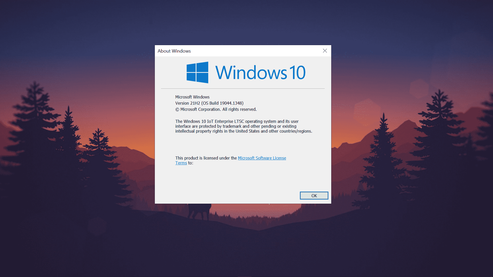

Windows 10 Enterprise LTSC

1. O que é Windows 10 Bloatware?
Os PCs Windows iniciam mais devagar do que deveriam, entupidos com software pré-carregado desnecessário conhecido como bloatware. Programas como Candy Crush Soda Saga, Groove Music, Filmes & TV etc. são pré-instalados. Estes aplicativos rodam em segundo plano e reduzem a velocidade dos computadores e degradam muito o desempenho sem que os usuários o saibam. Mesmo que você dê uma olhada em seu menu inicial no Windows 10, você notará um monte de aplicativos que são uma porcaria completa e nunca os usa.

2. Por que não usar apenas um Debloater em uma ISO padrão do Windows 10?
Mesmo que você tenha usado um Debloater no seu Windows 10, a Microsoft irá reinstalar uma ou outra porcaria com um patch de segurança ou forçar a instalação de atualizações em segundo plano ou, por algum motivo, a atualização do Windows quebrará seu PC e se tornará inutilizável.
3. O que é Windows 10 Enterprise LTSC?
O Long-Term Servicing Channel (LTSC) foi projetado para dispositivos Windows 10 e casos de uso em que o principal requisito √© que a funcionalidade e os recursos não mudem com o tempo. Em palavras simples, as principais atualiza√ß√µes de recursos não serão atualizadas nesta versão do Windows, portanto, basicamente, o Windows não será interrompido dessa maneira. Já que todo o bloatware foi removido e ficou muito mais leve, por que não tentar pelo menos uma vez! O pior √© que a Microsoft não divulgou muito sobre essa versão do Windows já que não quer que as pessoas usem e agora at√© se arrependem de t√™-la feito ü§°.
FAQ​
Por que usar?
- Nenhum aplicativo pré-instalado (Candy Crush Saga, Onenote para Windows 10, música Groove, etc.)
- Nenhuma atualização forçada
- Sem CORTANA (LEIA SOBRE), Windows Store, etc.
- Desempenho extra e mais estabilidade.
- Não haverá anúncios estranhos no menu Iniciar e os aplicativos da Microsoft não serão instalados automaticamente.
- Os aplicativos em segundo plano não serão mais executados, pois todos os aplicativos pré-instalados foram removidos.
- O ISO é de apenas 4,5 GB em comparação com o ISO padrão do Windows 10, que tem cerca de 6 GB. (É maior que o Windows 10 LTSC 2019, pois o LTSC agora é 21H2 com novidades)
Haverá problemas de compatibilidade e hardware?
O Windows 10 LTSC Enterprise 2021 agora é baseado no 21H2 que veio há alguns dias (portanto, a maioria dos sites está desatualizada, pois está falando do Windows 10 LTSC 1809). Como o Windows 10 LTSC Enterprise 2021 é baseado no 21H2, assim como a versão normal do Windows, provavelmente haverá problemas de compatibilidade com o hardware.
O Windows 10 LTSC está atualizado?
As atualizações de recursos são oferecidas em novas versões do LTSC a cada 2 a 3 anos, em vez de a cada 6 meses. Como o Windows 10 encerrará o suporte em 14 de outubro de 2025, haverá pelo menos uma atualização de recurso em 2023 ou 2024, portanto, estará quase atualizado como o Windows normal.
Até quando o Windows 10 LTSC será compatível e quais são as diferenças entre IoT e não-IoT?
O LTSC vem em duas versões IoT e não IoT. Abaixo estão as diferenças escritas:
| não-IoT | IoT | |
|---|---|---|
| Data final do ciclo de vida | Jan 12, 2027 | Jan 13, 2032 |
| Tipo de chave genérica | KMS | RTM |
| ¹Chave genérica incorporada no arquivo ISO | M7XTQ-FN8P6-TTKYV-9D4CC-J462D |
QPM6N-7J2WJ-P88HH-P3YRH-YY74H |
| Método de ativação | KMS | Digital License (HWID) |
| Idiomas disponíveis para arquivos ISO | Todos os idiomas nativos disponíveis. | Somente en-us "Inglês (Estados Unidos)" está disponível. |
Devo optar por IoT ou não-IoT?
As diferenças acima são bastante inúteis, pois o não-IoT pode ser convertido em IoT com a ajuda do MAS, que é usado para ativar o Windows. Portanto, você ainda terá suporte de fim de vida até 2032 e ativação HWID.
Preciso da Microsoft Store?
A instalação da loja meio que destrói o objetivo do LTSC, eu acho? Mas muitos laptops para jogos precisam de software como o Lenovo Vantage, o Asus Armory Crate requer UWP. Além disso, como a NVIDIA parou de oferecer suporte a drivers não UWP legados que não precisavam da loja da Microsoft, significa que não há mais atualizações forçando você a usar drivers nvidia UWP infelizmente :(
Para instalar a loja, abra o CMD como administrador e digite o seguinte código:
WSReset -i&&TimeOut 20&&WSReset -i&&exit
Ativando o Windows 10 Enterprise LTSC
Como comprar uma chave legítima do Windows 10 LTSC é muito caro, usaremos um ativador do Windows 10 para ativar o Windows 10 LTSC gratuitamente!
Veja como ativar na sessão MAS